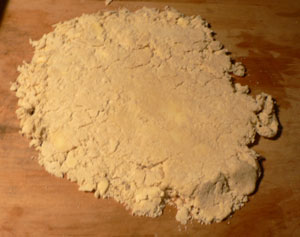
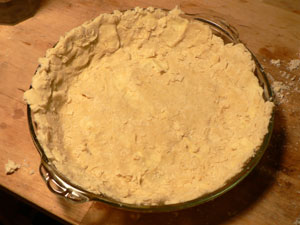
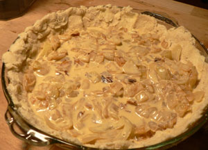
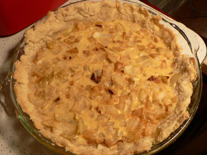

Tarte à l'oignon
I’ve been afraid of making my own tart dough ever since my quiche phase began. After being told repeatedly how boring it was to read about quiche made with store-bought shells, I decided it was time to get over my fears and just make the damn dough.
Flipping through André Soltner’s excellent Lutèce Cookbook today, I came across a recipe for his famous tarte à l’oignon. He wrote that when he was growing up in Alsace, there were restaurants that only served one thing, such as this tart, at one time of the day, and that everyone in town would go in for a piece of whatever was on offer and a glass of white wine or beer. Doesn’t that sound so civilized? He used to serve it for lunch at Lutèce and for dinner only when requested in advance. It sounded as easy as could be, and I am newly armed with five pounds of King Arthur all-purpose flour (which Balducci’s on 8th Avenue carries).
So I measured out two cups of flour and a teaspoon of salt, kneaded in a stick of cold unsalted butter, and then poured in 1/2 cup of cold water. I thought it was really cool to actually feel the gluten developing between my fingers as I kneaded. I let that rest in the fridge for half an hour while I cooked a pound of chopped onions in bacon fat for the filling. Then I pulled the dough from the fridge and began to roll it out.

Don’t ask me how I got it from the table into the pie plate—it was a complicated affair. You can see that parts of it are lumpy. That’s a result of repeated warnings not to overwork the dough and the fact that every time I touched those lumps they became gummier.

But into the pie plate it finally went. I beat an egg in a bowl with 1/2 cup of heavy cream, and I combined that with the onions and some salt, pepper, and a touch of nutmeg. Here is what it looked like before baking.

Twenty-five minutes later, we have my very first completely homemade onion tart.

I know that I have a lot to learn about making dough, but if the first time was any indication of things to come, I have every reason for happiness. There is a huge difference between this rustic, buttery concoction and the boringly perfect FreshDirect version.
As usual, any wisdom is appreciated! Should I roll the dough out on a Silpat and then invert it over the pie plate? If that’s even an issue, am I not rolling it enough? If it’s too crumbly, should I add a bit more water?
Comments
Congrats on first pastry. Hang in there..You might want to use a pastry cutter (cheap tool) to aid you in making your butter and flour more evenly combined, into an oatmeal texture before adding your water. This keeps it cooler, too—the heat of your fingers will make it mushier.
You don’t want the gluten to develop; it will be too chewy.
Actually, often the ugliest, most unwieldy, crumbly doughs taste wonderful, cause they are flakier rather than gummy. They are, as you note, not overworked. But you can go considerably less rustic and still have a flaky dough!
After years of fooling around with rolling dough on waxed paper and silpats and the like, I got myself a little pastry marble on ebay.
This is so much more effective for rolling out dough than I ever would have imagined. I guess it is the combo of coolness and smoothness. I can, like, fold the rolled out dough in fourths, set the center in the pie plate, and unfold it—with no sticking! It’s really remarkable.
My marble is too small, because I couldn’t afford or store a nice big one. but when I win the lottery, I’m going to have a kitchen with a marble counter space!
Everyone will have lots of tips for you-but it’s mostly practice to get a feel for it—as I’m sure you have sensed. Have a good time.
Thank you, Lindy! I daydream about having a kitchen big enough for marble and the like. Some day. I definitely have room for a pastry cutter, though, and I’ll take your advice.
My mouth was watering just looking at your tart! I second what Lindy says, sometimes the crumbliest doughs are the best, because they are the least overworked.
As you know, I use my Cuisinart to cut in the butter, and roll the pastry out between waxed paper. I’ve never tried marble but maybe I’ll find a place for one in my new kitchen.
I also cheat and use an egg in my pastry; I give up a lot of flakiness that way but gain in manageability and it does stay tender. I get really frustrated with all those bits of dough flying all over the place like you experienced and with an egg you can afford to work the dough a little bit more and it still won’t get tough.
My mother is the queen of homemade crusts and she always taught me to use a very floured rolling pin and when rolling out your pastry, use quick, short strokes, always from the center of the pastry. Keep flouring your pin if need be.
The pastry cutter is indeed a wonderful tool- I would also suggest you invest in one- less heat from your hands is always better.
But this looks GREAT for a first homemade pastry! It is not an easy task- I have certainly not mastered it- even after years of watching my mother!
Thank you, Emily and Mommy! I could eat a tart or a quiche every day, and it makes great leftovers for Nathan, so it looks like it will be a pastry party all summer.
Mom, you should try this tart. I think you’d really like it.
Leland – somewhere I have some recipes from the LA Times on Thomas Keller’s recipes for both pie doughs and quiche fillings. Let me root around for them and send them to you. They’re supposed to be sublime. I second Lindy’s suggestion to get a pastry cutter, though I do also have to say that the first time I made pastry dough in my food processor (acquired for free through my boyfriend’s mother), it was a revelation at how easy and perfect it turned out. So perhaps, keep an eye out for used FP’s or ask for one for a birthday… ;)
Thanks, Luisa! I am actually on the verge of buying a food processor. I had an FP/blender combo for the last year but it was complete junk and I just returned it. I’ll get a credit and use it towards a proper 7-cup Cuisinart.
Hi Sweetie, I agree with Emily and Mom. Lots of flour on the pin and quick strokes from the middle. Like Mom, I use my Cuisinart to do my dough and find it incredibly helpful. I always used the pastry cutter before that. I used one of those rubber mat things this winter at Sues’, and found it so easy to lift and lay on pie plate. Barbara, Tony’s ex, was a marvelous pie baker and swore by the marble. I have never even tried it. The tart looks absolutely “yummy, yummy, in my tummy”!
Love and hugs
Thanks, Grandma! Ok, I’ll get a food processor on the double.
Helen at Beyond Salmon (beyondsalmon.blogspot.com) has a good guide, with pix, to making and rolling out pie and tarte dough. Check it out.
I make this onion tart about once a month and have found it is immensely better to “blind bake” the pastry first…
Add a comment